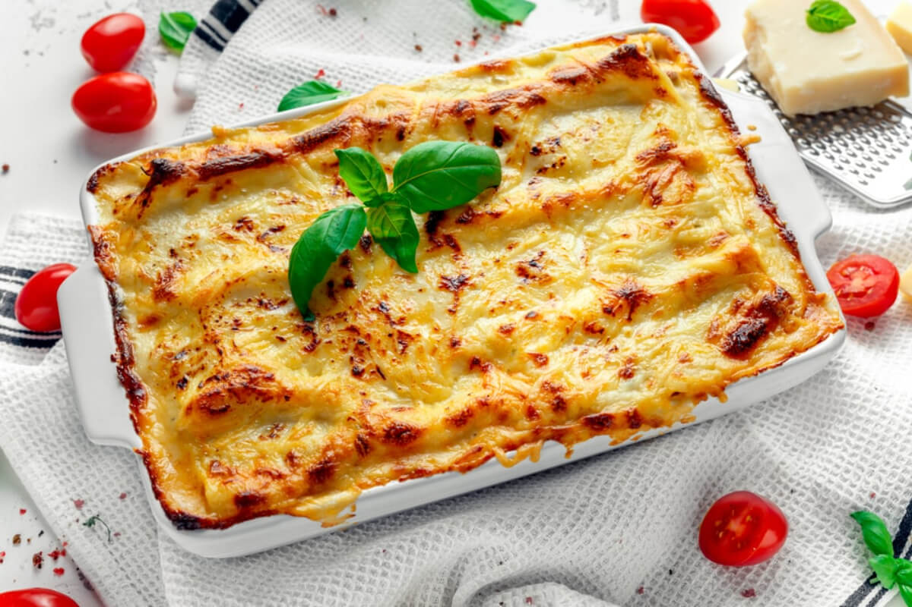

Lasagne

Description
Prepare this easy homemade lasagne ahead of time and save in the freezer, uncooked, for when you need it during a
busy week. Then just bake for an extra 45 mins.
Ingredients
- 2 olive oil, plus a little for the dish
- 90g pack prosciutto
- 2 medium onions, finely chopped
- 200ml hot beef stock
- 300g pack fresh lasagne sheets
- 125g ball mozzarella, torn into thin strips
Steps
- To make the meat sauce, heat 2 tbsp olive oil in a frying pan and cook 750g lean beef mince in two batches
for about 10 mins until browned all over.
- Add 4 finely chopped bacon rashers and fry for 10 mins until golden and crisp.
- Finely chop 4 slices of prosciutto from a 90g pack, then stir through the meat mixture.
- Increase the heat to medium-high, add 500g beef mince and cook stirring for 3-4 mins until the meat is
browned all over.
- Pour over 800g passata or half our basic tomato sauce recipe and 200ml hot beef stock. Add a little grated
nutmeg, then season.
- Bring to the boil, reduce to a gentle simmer and cover with a lid. Cook for 1 hr 15 mins stirring
occasionally, until you have a rich, thick sauce.
- Repeat until you have 3 layers of pasta. Cover with the remaining 390g white sauce, making sure you can’t
see any pasta poking through.